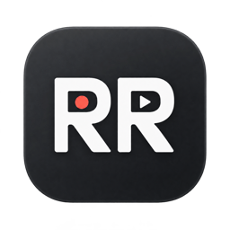
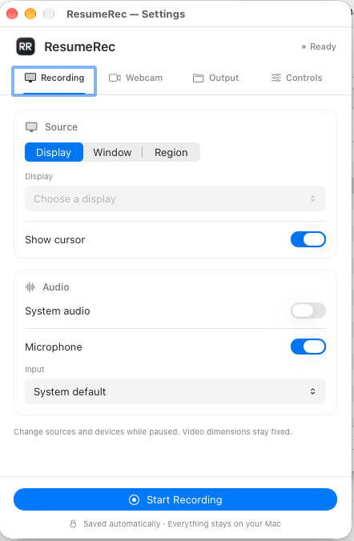

A pause, not a new file.
Stop to think. Switch your source. Then carry on. Paused time disappears from both video and audio, leaving you with one MP4.

ResumeRecA LITTLE APP FOR YOUR MAC
Your screen, your voice, your pace.
Take a break. Pick up where you left off.
Save it all as one seamless video.

Made to record.
Built to stay out of the way.
JUST WHAT YOU NEED
A walkthrough, a quick demo, a thought worth sharing.
Get it recorded without making a project out of it.
Stop to think. Switch your source. Then carry on. Paused time disappears from both video and audio, leaving you with one MP4.
Capture a display, window or region. Add your webcam, choose its shape and position, and make the recording feel a little more human.
Record your microphone, system audio, or both. Choose your input device and let your voice do the explaining.
Your recordings stay yours. Everything runs locally. Videos save straight to a folder on your Mac.
FROM DOWNLOAD TO RECORDING
Apple Silicon (M1 or newer)
macOS 26 or later
Open the DMG installer and drag ResumeRec into Applications. Then eject the disk.
Open the app and find RR in your menu bar. In Settings, choose your output folder, capture source and audio.
Allow the macOS permissions you need. Start recording, pause whenever you like, then choose Stop & Save.
A small app for the things you want to show.
Download ResumeRec